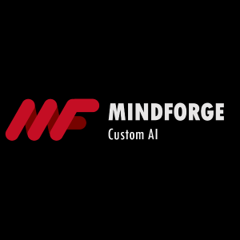
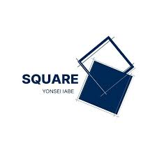
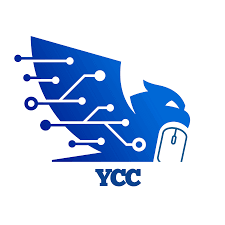
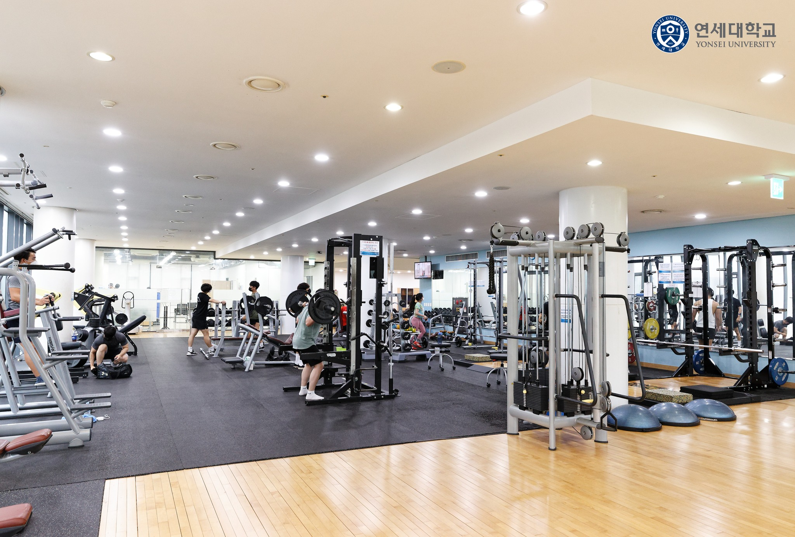

|
Junhyeok Park I am a fourth-year undergraduate student Yonsei University, double majoring in Interior Architecture and Computer Science. I currently conduct research in the field of computer vision at the CIP Lab, Yonsei University. My interest in AI, especially in computer vision began from architectural 3D modeling in interior architecture during my undergraduate studies. I continue to pursue this passion through active participation in various academic clubs and societies, including YAI (Yonsei AI) and YCC (Yonsei Computer Vision Club). |

|
Research InterestsI am currently exploring research topics in computer vision, particularly in 3D and VLM. I am also interested in LLMs. |
Education |
 |
Yonsei University, Seoul Korea
Mar 2021 - Aug 2027(expected) B.S. in Interior Architecture & B.S. in Computer ScienceGPA: 3.84/4.3 |
Experience |
 |
CIP Lab, Yonsei University
Undergraduate Intern (Advisor: Seon Joo Kim) | Jan 2026 - Present CIP Lab, a computer vision lab at Yonsei University, I built foundational knowledge through intern-led seminars on topics in computer vision, 3d, VLM, robotics. I am currently studying core papers in 3D vision and diffusions.
|
 |
Mindforge
Company Intern | Sep 2025 - Dec 2025 Mindforge, an edge device AI solutions company, I participated in paper seminars, contributed to a drone localization project using visual place recognition, and worked on an AI-based green coffee bean classification project. |
 |
YAI, Yonsei Artificial Intelligence Club
15th & 16th Member, Operations Executive | Jul 2025 - Present YAI, the first and only AI club at Yonsei University, focuses on studying the principles and applications of artificial intelligence. As a member, I actively engage in various club activities, paper seminar, discussion and projects. |
Honors and Awards |
|
Certificate of Achievement – US Army (x2)
2023
Recognized for key roles in ROK-US training & friendship activities.
|
|
|
Special Award – NYPC (Nexon Youth Programming Challenge)
Aug 2025
Ranked within the Top 100 among 600+ teams. Recognized for AI-based board game problem solving.
|
Extracurricular |
|
 |
Interior Architecture Student Council
Member | Mar 2021 – Dec 2021 Participated in event planning and management for the student council, organizing and executing various departmental events and activities. |
|
 |
YCC (Yonsei Computer Club)
Member | Sep 2024 – Present Active participant in computer science study groups and collaborative projects, engaging with fellow members to deepen understanding of CS fundamentals and practical applications. |
Things I Love |
|
Stock Investing
I invest in Korean and American stocks based on fundamental analysis and economic news, continuously studying market trends and expanding my economic perspective. |
|
|
 |
Workout
As a recently started hobby, I work out at the school gym or at home whenever I have time, with the goal of building a consistent strength-training routine by 2026. |
|
Website template from Jon Barron. |